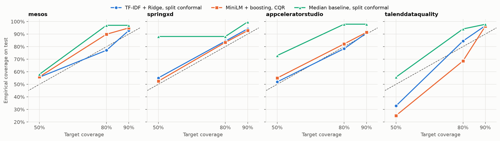
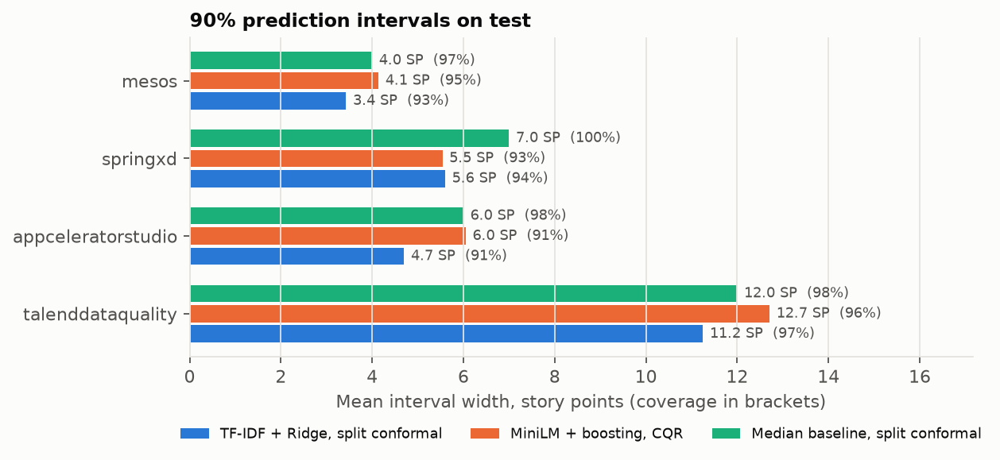
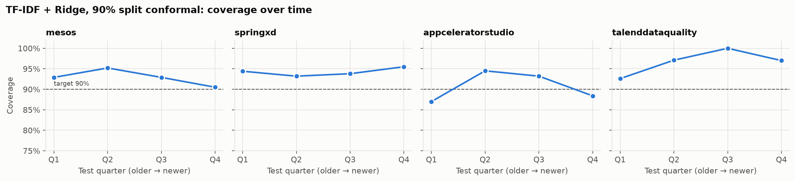
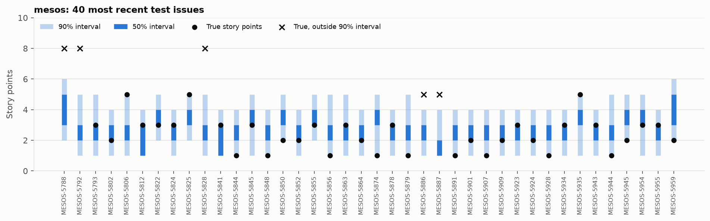

01 — Pipeline
- 01 → Deep-SE issues 4 open-source Jira projects, ~9.5k issues with story points.
- 02 → Split by time Train on the oldest 60%, calibrate on the next 20%, test on the newest 20%.
- 03 → Text to vector TF-IDF word weights. MiniLM sentence embeddings were tested as an alternative.
- 04 → Regress SP Ridge on TF-IDF; gradient boosting on MiniLM for comparison. Tuned on validation only.
- 05 → Conformal calibration Measure errors on the calibration slice, pick the margin q.
- 06 ■ Test, once Coverage and width with bootstrap CIs, at the very end.
02 — The interval
Look at how wrong the model was on issues it never trained on. Take a margin wide enough to cover the chosen share of them.
Split conformal prediction. The guarantee is mathematical but conditional: it holds while new issues are exchangeable with the calibration ones. Section 04 shows what happens when they are not.
conformal.py
# errors on n calibration issues r_i = |y_i − ŷ_i| # margin for level 1 − α q = r_(k), k = ⌈(n + 1)(1 − α)⌉ # interval for a new issue [ max(1, ŷ − q), ŷ + q ] # story points are integers: round inward, # coverage is unchanged [ ⌈lo⌉, ⌊hi⌋ ]
03 — Test results
TF-IDF + Ridge, split conformal · CI = bootstrap 95%| Project | Test n | MAE | Median baseline | Coverage @90 | Mean width |
|---|
Figures




04 — Where the guarantee stops
—
typical SP, , training → test period
The team started estimating smaller. The intervals didn't know.
Intervals calibrated on older issues sat too high for new ones.
The method did what it promises. The assumption behind it, that the future looks like the past, did not hold.
05 — Reproduce
One command goes from downloading the data to the figures, and also exports the files this page loads.
Open repository$ git clone https://github.com/Aishayest/EstiMate $ cd EstiMate && python -m venv .venv $ .venv/bin/pip install -r requirements.txt $ .venv/bin/python -m src.pipeline